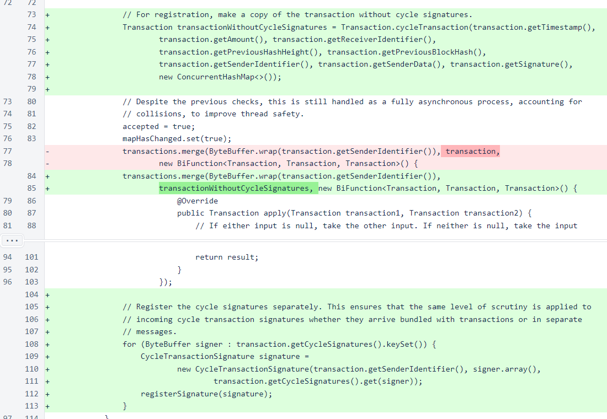
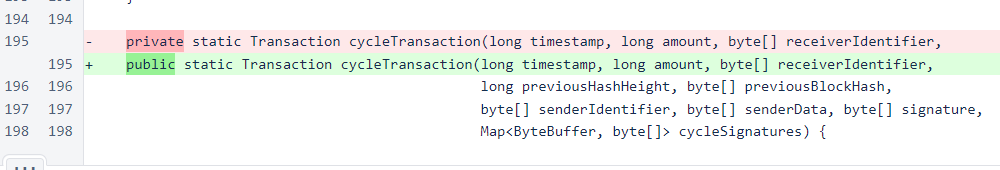
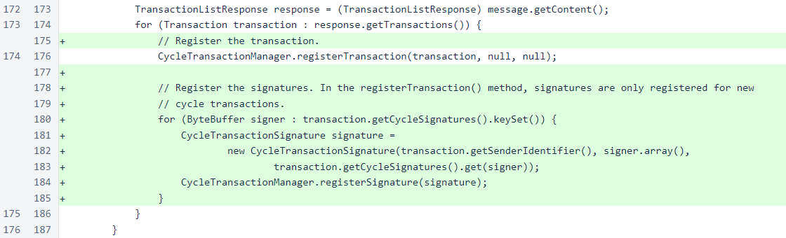
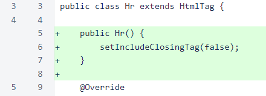

Nyzo version 554 (commit on GitHub) improves cycle transaction handling.
This version affects the verifier. It also contains an insignificant change to HTML rendering that affects the documentation server.
In the CycleTransactionManager.registerTransaction() method, cycle transactions are now separated from their signatures before registration. This ensures that only valid, in-cycle signatures are added to the CycleTransactionManager.
This was not a security issue, because all cycle transaction signatures are also checked by the Verifier class before block assembly and by the BalanceManager in its enforceCycleTransactionRules() method. But it could have allowed an attacker to cause the CycleTransactionManager to store large numbers of invalid signatures, causing unnecessary memory usage.
In Transaction, the cycleTransaction() overload that reassembles a cycle transaction was changed from private to public. Previously, this method was used only by this class for reassembling cycle transactions from byte buffers. It was exposed to allow the CycleTransactionManager, in the change described above, to create a copy of the transaction without cycle signatures.
In CycleTransactionListCommand, the transaction signatures are now registered separately from the transaction. This is necessary because, as the comment explains, the registerTransaction() method does not register signatures attached to a transaction that is already known to the system. While the behavior of the registerTransaction() method is reasonable for operation of a verifier, it is not the desired behavior for the client, which will likely want to see signatures that have been received by a verifier since the last time the transaction was queried.
The Hr class has been modified to omit the closing tag. This class is only used, currently, by the documentation server.
